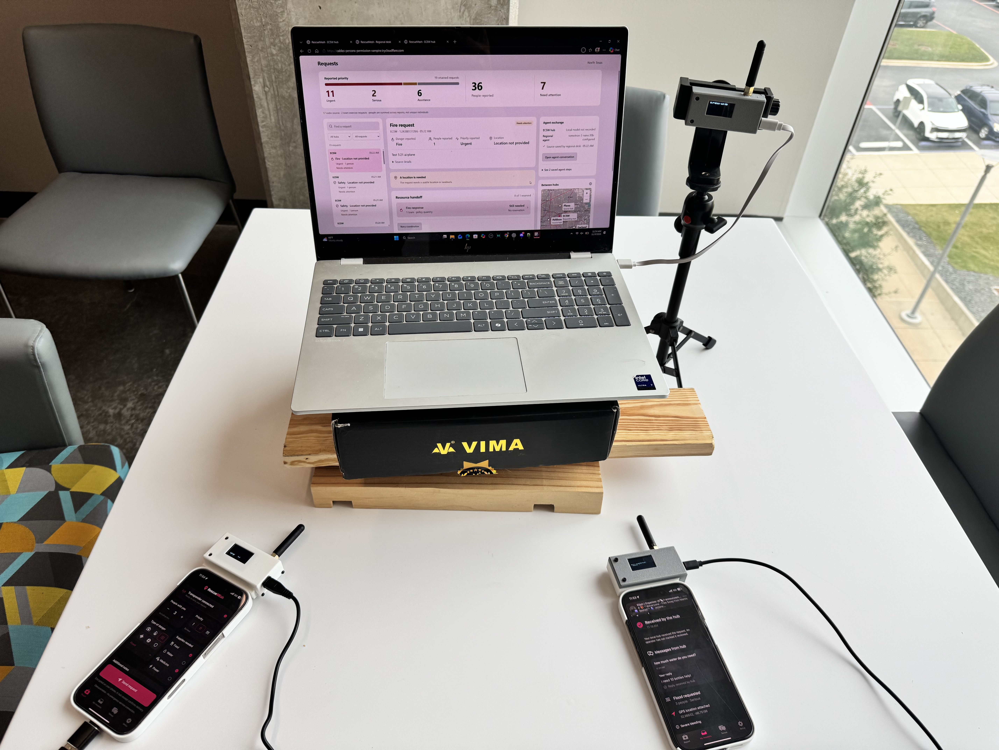
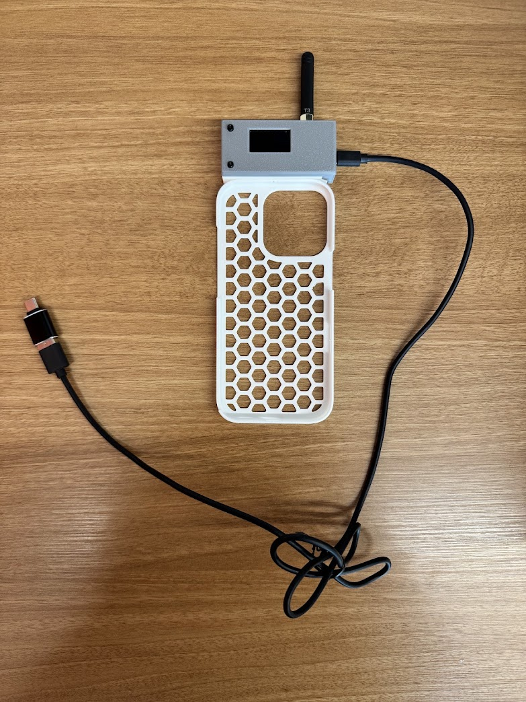
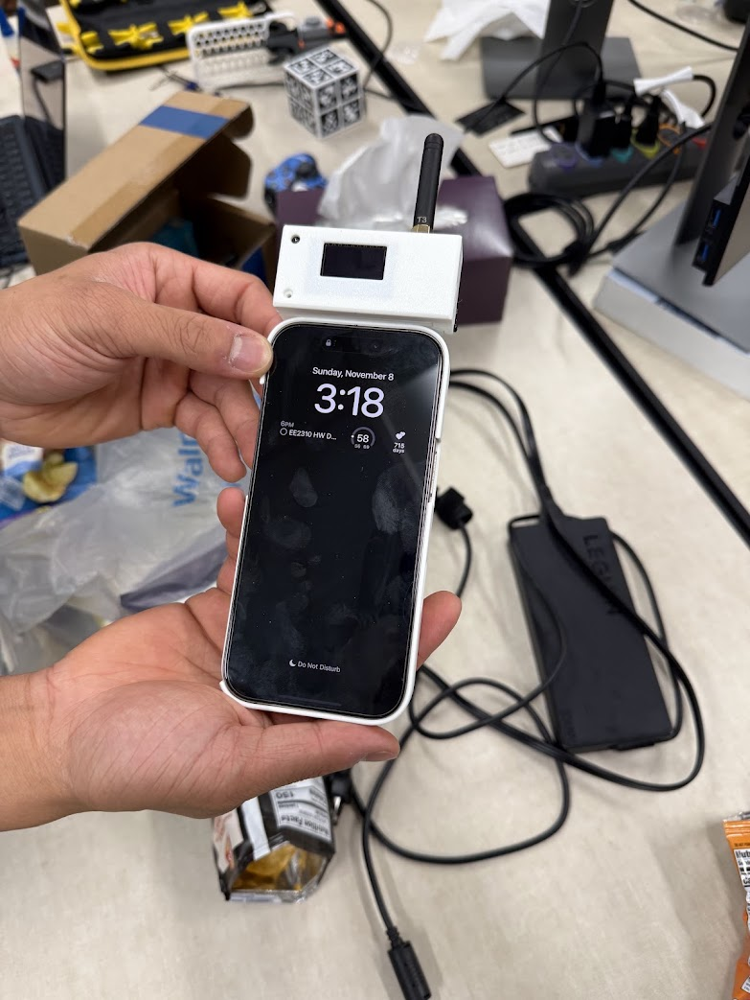

RescueMEsh
HackUTD 2026 · Swift · ESP32 / LoRa · Python · MongoDB · NVIDIA Nemotron
A phone, a small radio, and a way to get a request for help out when cell service is unavailable.

When the network is down
When cell service goes down, sending a simple request for help gets a lot harder. We built RescueMEsh around that problem: a phone app, small radio attachments, and a hub that brings incoming reports into one place.
The phone connects to its radio companion over Bluetooth. The companion sends encrypted messages over LoRa, so that part of the route does not need a cell tower or an internet connection. Reports carry information such as the situation, how many people need help, and location when available. Relays forward the encrypted messages rather than reading their contents.
What we built
The Swift app turns an SOS into a compact report. ESP32 radio boards handle the wireless link, and 3D-printed enclosures keep the hardware together. At the receiving end, a laptop hub saves reports, sends acknowledgements, and gives an operator a readable view of what has arrived.
NVIDIA Nemotron helps structure reports and suggest priorities and resource allocations. The original report stays available, and an operator can correct information or override the suggestions. A regional dashboard models coordination between hubs, including which cases still need attention.


The demo
Our HackUTD setup brought together the phone app, radio hardware, and hub dashboard. The regional demo combined the physical ECSW hub with simulated locations and dispatch resources. It was a prototype, not a connection to real emergency services. A delivery receipt means the hub received a report, not that help has been dispatched.
Built with Alex Huang, Dersh Bhakta, and Yash Chavan. RescueMEsh won at HackUTD!